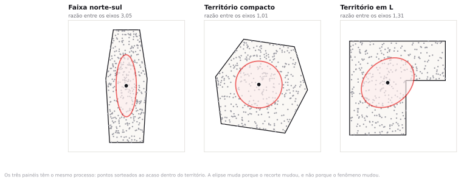

Preparação e dados
A leitura do tema era a nota metodológica do INPE sobre o satélite de referência do Programa Queimadas. São quatro páginas. Se você não leu, leia enquanto a turma se organiza.
- tema07_cerrado_bahia.gpkg Um GeoPackage com três camadas, todas já emoficial
EPSG:31983, que é o fuso 23 em metros.focos_aqua: 5.907 focos de calor do satélite de referência AQUA_M-T, junho a novembro de 2023 e de 2024, com o ano, o município, a potência radiativa e o risco de fogo.cnes: 1.712 estabelecimentos de saúde ativos em 36 municípios, com a colunan_mesmo_ponto, que diz quantos cadastros dividem aquela coordenada.municipios: os 46 municípios do recorte.
Uma secretaria estadual manda a você uma planilha com 1.712 endereços de estabelecimentos de saúde e pede um mapa que mostre onde a rede está concentrada. Você geocodifica, plota e a mancha aparece. Quanto dessa mancha é a rede, e quanto é o geocodificador?
Do endereço ao ponto, e do ponto ao número
Uma lista de endereços é um texto; o mapa de pontos que sai dela é uma geometria. Entre os dois há um procedimento que erra, e erra de maneira previsível. A primeira metade desta aula é sobre esse procedimento. A segunda é sobre como descrever a nuvem de pontos sem apelar para o olho.
Você chega aqui sabendo cruzar tabelas, medir área e desconfiar de uma classificação. O que ainda falta é um método para dizer o que uma nuvem de pontos tem, em números que outra pessoa possa conferir. Dois mil focos de fogo espalhados entre Barreiras e Formosa do Rio Preto parecem muitas coisas dependendo de quem olha. A centrografia transforma esse "parece" em quatro números.
Geocodificação é uma inferência
Geocodificar é converter uma cadeia de texto em um par de coordenadas. A cadeia é algo como "Av. Getúlio Vargas, 1250, Centro, Bom Jesus, PI". A saída é um ponto. Entre a entrada e a saída existe um casamento aproximado contra uma base de referência, e esse casamento tem qualidade variável.
O erro mais comum de quem começa é tratar o resultado como uma conversão exata, do tipo que transforma metro em pé. É uma inferência, com margem de erro que depende do nível em que o casamento foi possível.

Nível de precisão da geocodificação
É a informação que diz qual objeto foi usado para atribuir a coordenada. Do mais preciso para o menos: o telhado ou o centroide do lote; a interpolação na face de quadra, que estima a posição do número dentro do trecho de rua; o centroide do CEP; e o centroide do município. Toda API de geocodificação séria devolve esse campo. Quem descarta essa coluna perde a única informação que permite auditar o mapa depois.
A interpolação na face de quadra é o nível mais frequente em cidade brasileira média e o menos compreendido. O geocodificador sabe que a Rua X, no trecho entre a Rua A e a Rua B, contém os números de 100 a 298. Recebe o número 172 e supõe distribuição uniforme ao longo do trecho, colocando o ponto a 36% do comprimento. Se o quarteirão tem um terreno baldio de cem metros no meio, a suposição falha e o ponto cai na casa errada. Erro típico de algumas dezenas de metros, o suficiente para trocar o setor censitário em área urbana densa.
A taxa de match, a proporção de endereços que o serviço conseguiu resolver, é o primeiro número que o fornecedor apresenta e costuma ser o único. Uma taxa de 96% soa excelente para quem não faz a conta seguinte: match não é estado binário. Um serviço pode declarar 96% e ter resolvido metade dos casos no centroide do município. No relatório, foram 96%. No mapa, metade dos pontos está empilhada sobre um punhado de praças de matriz.
Se o erro de geocodificação é de trinta metros, ele importa para qual análise?
Depende do tamanho da unidade de análise. Para somar estabelecimentos por município, trinta metros nunca muda nada. Para contar por setor censitário, muda em toda quadra de borda. Para dizer se o ponto está dentro ou fora de um raio de 300 metros de uma estação, muda em todo caso que cai perto da borda. A regra prática: o erro posicional importa quando é da mesma ordem de grandeza da menor feição da análise.
Onde o erro se concentra
Endereços que falham na geocodificação não falham ao acaso. A falha se concentra onde o logradouro não tem nome oficial ou onde a base de referência está desatualizada, ou seja, em ocupação informal e em município pequeno.
O CNES não publica o nível de precisão de cada coordenada, e é por isso que ele serve de exemplo: você não tem a coluna que auditaria o cadastro, então precisa procurar o sintoma. O sintoma está no arquivo desta aula, na coluna n_mesmo_ponto. São 77 estabelecimentos dividindo 25 coordenadas, e a maior pilha tem treze.
| Porte do município | Municípios | Estabelecimentos | Em coordenada repetida |
|---|---|---|---|
| 100 ou mais estabelecimentos | 4 | 885 | 1,4% |
| de 40 a 99 | 3 | 186 | 7,0% |
| menos de 40 | 29 | 641 | 8,1% |
Em Riachão das Neves, treze dos vinte e três estabelecimentos aparecem todos na mesma coordenada, com bairro registrado como zona rural. Em Barreiras, com 335 estabelecimentos, são três. Ninguém foi a campo com GPS em Riachão das Neves: alguém digitou o ponto da sede e replicou.

Se você tratar cada ponto como posição real, o mapa mostra uma rede de saúde concentrada em Barreiras e em Luís Eduardo Magalhães. A rede é concentrada de fato: os quatro municípios grandes têm 52% dos estabelecimentos. Mas não tanto quanto o mapa afirma, porque a rede difusa dos 29 municípios pequenos aparece colapsada em pilhas sobre as sedes. Uma política de expansão desenhada sobre esse mapa reforça os municípios grandes, que é onde o cadastro é bom, e subestima a demanda dos pequenos, que é onde a rede é mais rala e o cadastro, pior.
Rodar um mapa de calor sobre uma camada com pontos empilhados. Os 77 registros viram 25 picos de densidade desproporcionais, e os dois maiores ficam mais altos que Barreiras inteira, que tem 335 estabelecimentos espalhados. O mapa passa a mostrar a geografia do cadastro em vez da geografia da rede. Antes de qualquer análise de densidade, conte as coordenadas repetidas e declare quantas são.
Quando o ponto deixa de ser dado e passa a ser pessoa
A LGPD, Lei 13.709/2018, define dado pessoal como informação relacionada a pessoa natural identificada ou identificável. A coordenada de uma residência, sozinha, costuma bastar para identificar quem mora nela. Um ponto de estabelecimento de saúde não é dado pessoal. Um ponto de residência de paciente é, e quando o dado descreve condição de saúde ele é dado pessoal sensível, com regime mais restrito. Agregar por setor censitário ou por hexágono é o que separa uma análise publicável de um vazamento.
Um mapa de pontos de residência de pacientes com determinada doença, publicado em escala municipal, é dado anonimizado?
Em município de 12 mil habitantes, provavelmente não: a coordenada da casa mais o diagnóstico bastam para identificar. Em capital, com centenas de casos na mesma quadra, a resposta muda. O critério não é o formato do arquivo, é a possibilidade concreta de reidentificação. E o deslocamento aleatório dos pontos não resolve sozinho, porque a mediana do deslocamento continua indicando a posição verdadeira quando há repetição de casos.
Os três centros
A centrografia é a estatística descritiva do ponto: média e desvio padrão transportados para duas dimensões. O nome é antigo, do começo do século XX, e os cálculos cabem em uma planilha. A dificuldade está em escolher qual medida usar.
Centro médio
É o ponto cujas coordenadas são a média aritmética das coordenadas dos eventos. Tem a mesma propriedade da média em uma dimensão: minimiza a soma dos quadrados das distâncias e é sensível a valor extremo. Um foco isolado a 400 quilômetros do restante puxa o centro médio na direção dele.
Centro mediano
É o ponto que minimiza a soma das distâncias, sem elevar ao quadrado. Resiste a valor extremo do mesmo jeito que a mediana resiste em uma dimensão. Não tem fórmula fechada: calcula-se por iteração. Alguns programas chamam de centro mediano a mediana separada de cada coordenada, que é outra coisa e não coincide com esta.
Centro médio ponderado
É a média das coordenadas com peso. O peso muda a pergunta: sem peso, cada foco conta igual e o centro responde onde o fogo acontece; com peso pela potência radiativa, cada foco conta pelo tanto de energia que liberou e o centro responde onde o fogo queima forte. São perguntas diferentes, e no passo 4 as respostas ficam a vinte e nove quilômetros uma da outra.

O centro médio de uma nuvem de pontos precisa cair sobre algum ponto observado?
Não, e em geral não cai. O centro médio dos focos de 2024 cai em Riachão das Neves, a 3,2 km do foco mais próximo, sobre uma área que não queimou. Em 2023 cai em Angical, 22,9 km a leste-nordeste. É uma síntese estatística, não um lugar. Confundir as duas coisas produz frases como "o epicentro das queimadas é Riachão das Neves", que é erro de interpretação, não de cálculo.
Dispersão, direção e a forma do recorte
A distância padrão é a raiz da média dos quadrados das distâncias de cada evento ao centro médio. É o desvio padrão em duas dimensões, sai em metros e desenha um círculo. Um número só, fácil de comparar entre dois anos, que joga fora toda a informação de direção.
A elipse de desvio padrão guarda a direção. Ela ajusta os dois eixos que melhor descrevem o espalhamento e devolve três quantidades: o semieixo maior, o semieixo menor e o azimute do eixo maior. A razão entre os eixos diz o quanto o padrão é alongado; o azimute diz para onde. Perto de 1, o azimute é ruído com aparência de resultado, porque variações ínfimas na amostra giram a elipse inteira.

A Figura 4 mostra o risco de ler uma elipse isolada: a forma do território contamina a forma da elipse. A saída não é abandonar a medida, é comparar duas elipses calculadas no mesmo recorte. No roteiro você vai calcular três — os focos de 2023, os focos de 2024 e os estabelecimentos de saúde — sobre o mesmo pedaço da Bahia. Se a moldura fosse a única coisa a determinar a forma, as três sairiam iguais. Não saem.
O passo 7 também traz uma medida de extensão mais simples. A envoltória convexa é o menor polígono convexo que contém todos os pontos, como um elástico esticado em volta da nuvem; ela é definida pelos extremos, então um único registro espúrio a duzentos quilômetros do resto muda a área em dezenas de milhares de quilômetros quadrados. A elipse não se abala com isso. Medidas diferentes quebram por motivos diferentes, e saber qual quebra com o quê é metade do ofício.

A prova pode apresentar um mapa de pontos geocodificados com a taxa de match declarada e pedir qual conclusão o mapa sustenta e qual não sustenta. Pode também dar duas elipses de desvio padrão do mesmo fenômeno em dois períodos e pedir a leitura da mudança, com a advertência sobre o efeito do recorte. Saber calcular à mão não é cobrado; saber dizer o que cada medida responde e o que ela ignora é.
Duas nuvens, oito números
Os dados vêm prontos: já filtrados pelo satélite de referência e já em metros. Nenhum passo pede edição de tabela. Todos os valores abaixo saem do arquivo que você baixou; se o seu QGIS mostrar outro número, algum passo saiu diferente.
Abrir o pacote
- Crie a pasta
InfoGeo/tema07_pontos, abra o QGIS e salve o projeto comoprojeto.qgzdentro dela. - Arraste
tema07_cerrado_bahia.gpkgpara a janela do QGIS. Ele tem três camadas; selecione as três na janela que abrir. - No painel Browser, em XYZ Tiles, dê duplo clique na conexão OpenStreetMap que você cadastrou no tema 1 e arraste a camada para o fundo da pilha. Se a conexão não aparecer, refaça o passo 5 do Encontro 1.
- Deixe
municipiossem preenchimento, com contorno cinza fino. - Abra a tabela de atributos de
focos_aquacomF6e confira o total.
São 5.907 focos, 3.218 de 2023 e 2.689 de 2024, em 37 municípios. A camada cnes tem 1.712 registros e municipios, 46 polígonos. Em Properties ▸ Information, o CRS das três é EPSG:31983, e a extensão sai em centenas de milhares, não em graus negativos.
O arquivo bruto do INPE traz dezesseis sensores. Um incêndio que dura seis horas aparece como foco no NOAA-20 de manhã, no AQUA à tarde e no GOES-16 a cada dez minutos; somar tudo conta o mesmo fogo dezenas de vezes. Para que a série seja comparável ao longo dos anos, o INPE define um satélite de referência, o AQUA_M-T, com passagem no início da tarde, e é dele que vem todo número divulgado como série temporal. No recorte desta aula, 212.160 detecções brutas viram 5.907 focos de referência: uma razão de 36 vezes. Duas manchetes, uma dizendo "noventa mil focos" e outra "dois mil e setecentos", podem estar as duas certas sobre o mesmo território e o mesmo ano.
O empilhamento, no mapa
Antes de medir qualquer coisa, veja com os próprios olhos o defeito que a teoria descreveu. A coluna n_mesmo_ponto já traz, para cada estabelecimento, quantos cadastros dividem aquela coordenada.
- Clique com o botão direito em
cnese escolha Filter. - Na janela Query Builder, escreva a expressão abaixo e clique OK.
"n_mesmo_ponto" > 1 -- aspas duplas em nome de campo
- Dê Zoom to Layer e aproxime em Riachão das Neves, ao norte de Barreiras.
- Abra a tabela de atributos e ordene por
n_mesmo_ponto, clicando no cabeçalho da coluna. - Limpe o filtro antes de seguir: Filter de novo, botão Clear, OK.
Com o filtro ativo sobram 77 registros. No mapa, eles aparecem como 25 pontos, porque cada um esconde de dois a treze cadastros. A pilha de treze é em Riachão das Neves, e os nomes na tabela são de unidades de saúde da família em lugares distintos: Barra do Riacho, Areias, Pintor. Depois de limpar o filtro, a camada volta a 1.712.
São 4,5% dos estabelecimentos em 2,6% das coordenadas. Parece pouco. No exercício do fim da aula você vai medir se esses 4,5% mudam o resultado da centrografia, e a resposta não é a que a maioria chuta.
Centro médio dos dois anos, de uma vez
O algoritmo de centro médio aceita um campo de agrupamento. Informando o ano, ele devolve um centro por ano em uma única execução, o que evita refazer tudo duas vezes.
- Abra Processing ▸ Toolbox e procure por Mean coordinate(s), de id
native:meancoordinates. - Preencha conforme a tabela e clique Run.
- Input layer
- focos_aqua
- Weight field
- vazio
- Unique ID field
- ano
- Mean coordinates
- centros.gpkg, na pasta do tema
- Abra a tabela de atributos da camada nova. Ela tem duas linhas e as colunas
MEAN_X,MEAN_Yeano. - Dê aos dois pontos um símbolo visível, uma estrela preta de tamanho 3, em Properties ▸ Symbology.
O centro de 2024 está em E 513.389,4 / N 8.690.545,0, dentro de Riachão das Neves. O de 2023, em E 534.913,5 / N 8.698.479,4, em Angical. Separa os dois uma distância de 22,9 km, com azimute de 249,8 graus, para oés-sudoeste.
Centro ponderado pela energia liberada
O campo frp traz a potência radiativa do fogo em megawatts, medida na passagem do satélite. Ponderar por ela muda a pergunta de "onde o fogo acontece" para "onde o fogo queima forte".
- Rode Mean coordinate(s) de novo, com tudo igual e duas mudanças: Weight field em
frpe saída emcentros_frp.gpkg. - Dê a essa camada um símbolo de outra cor, uma estrela âmbar do mesmo tamanho.
- Meça a distância entre o centro simples e o ponderado de 2024 com View ▸ Measure ▸ Measure Line, com encaixe ativado.
| Centro de 2024 | Leste (m) | Norte (m) |
|---|---|---|
| Médio simples | 513.389,4 | 8.690.545,0 |
| Ponderado pela FRP | 489.595,6 | 8.706.785,4 |
| Diferença | −23.793,8 | +16.240,4 |
O deslocamento em 2024 é de 28.808 metros, com azimute de 304,3 graus, para noroeste, em direção a Formosa do Rio Preto e São Desidério, onde a lavoura mecanizada produz focos de potência mais alta. Em 2023 o deslocamento é de 22.581 m com azimute de 36,4 graus, ou seja, para o lado oposto. A soma da FRP dos 2.689 focos de 2024 é de 272.848,6 MW, com mediana de 41,1 MW e máximo de 3.718,3: a média, de 101,5 MW, é duas vezes e meia a mediana, e é essa cauda que puxa o centro.
Qual dos dois centros você põe no relatório de uma brigada de incêndio?
Depende do que a brigada faz. Se a decisão é onde posicionar equipes para atender o maior número de ocorrências, o centro simples. Se é onde deixar equipamento pesado para os eventos que ameaçam sair de controle, o ponderado. Vinte e nove quilômetros separam as duas respostas, o que em estrada de terra no oeste baiano é mais de uma hora de deslocamento.
Distância padrão
O QGIS 4.2 não traz ferramenta pronta para a distância padrão, e não precisa: a definição cabe em uma expressão. Você vai usar Geometry by expression, que lê cada centro e devolve uma geometria nova — aqui, o círculo de raio igual à dispersão daquele ano.
- Na Toolbox, procure Geometry by expression, de id
native:geometrybyexpression. - Entrada:
centros. Em Output geometry type escolha Polygon. Saída:circulos.gpkg. - Cole a expressão abaixo no campo Expression e rode.
buffer($geometry,
sqrt(
aggregate('focos_aqua','sum',
($x - attribute(@parent,'MEAN_X'))^2 + ($y - attribute(@parent,'MEAN_Y'))^2,
"ano" = attribute(@parent,'ano'))
/ aggregate('focos_aqua','count', $id, "ano" = attribute(@parent,'ano'))
), 72)
Leia a expressão de dentro para fora e ela é a definição, palavra por palavra. A primeira soma percorre os focos do mesmo ano e acumula o quadrado da distância de cada um ao centro; a segunda conta quantos são; a divisão é a média; a raiz é a distância padrão. O buffer desenha o círculo em volta do centro, com 72 lados.
A distância padrão é de 144.181 m em 2024 e 136.114 m em 2023, ou 144,2 e 136,1 km. Os círculos correspondentes cobrem 65.303 e 58.200 km². A dispersão subiu 5,9% de um ano para o outro, enquanto a contagem de focos caiu 16,4%: menos fogo, espalhado por mais território. As duas afirmações se defendem porque os dois números saíram do mesmo cálculo, no mesmo recorte, com o mesmo satélite.
Output geometry type vem em Polygon por padrão, mas se você deixar Point o algoritmo roda, não reclama e grava polígonos dentro de uma camada declarada como ponto. A tela fica em branco e a simbologia oferece opções de ponto para uma geometria que é área. Se o círculo não aparecer, confira esse campo antes de qualquer outra coisa.
A elipse
A elipse precisa de três números que o círculo não precisa: os dois semieixos e o azimute. Eles saem de três somas sobre a nuvem — o desvio ao quadrado em x, o desvio ao quadrado em y e o produto dos dois desvios. Essa terceira soma é a que carrega a direção, e é a única novidade em relação ao passo anterior.
- Rode Geometry by expression outra vez. Entrada:
centros. Output geometry type: Polygon. Saída:elipses.gpkg. - Cole a expressão abaixo e rode.
- Deixe as elipses sem preenchimento, com contorno preto de 0,9 mm.
with_variable('a', aggregate('focos_aqua','sum', ($x - attribute(@parent,'MEAN_X'))^2, "ano" = attribute(@parent,'ano')),
with_variable('b', aggregate('focos_aqua','sum', ($y - attribute(@parent,'MEAN_Y'))^2, "ano" = attribute(@parent,'ano')),
with_variable('c', aggregate('focos_aqua','sum', ($x - attribute(@parent,'MEAN_X')) * ($y - attribute(@parent,'MEAN_Y')), "ano" = attribute(@parent,'ano')),
with_variable('n', aggregate('focos_aqua','count', $id, "ano" = attribute(@parent,'ano')),
with_variable('r', sqrt((@a - @b)^2 + 4 * @c^2),
make_ellipse($geometry,
sqrt((@a + @b + @r) / (2 * @n)),
sqrt((@a + @b - @r) / (2 * @n)),
(90 - degrees(0.5 * atan2(2 * @c, @a - @b))) % 180,
72)
)))))
| Nome | O que é |
|---|---|
a | Soma dos quadrados dos desvios em leste-oeste |
b | Soma dos quadrados dos desvios em norte-sul |
c | Soma dos produtos dos dois desvios. É o único termo que muda se a nuvem for inclinada; vale zero quando o espalhamento é paralelo aos eixos |
n | Quantos focos entraram na conta |
r | Termo auxiliar que separa os dois eixos. Soma-se para o maior, subtrai-se para o menor |
Duas elipses aparecem, quase redondas e quase sobrepostas. Em 2024 os semieixos são 108.107 m e 95.399 m, razão de 1,13, com área de 32.359 km². Em 2023 são 98.795 m e 93.631 m, razão de 1,05, com área de 29.024 km².
Os azimutes saem 173,3 graus em 2024 e 14,3 em 2023, o que parece uma rotação de 159 graus em um ano. Não houve rotação nenhuma. Com razão entre eixos de 1,05, as duas direções são quase igualmente boas e qualquer diferença ínfima na amostra decide qual delas ganha. O azimute só sustenta afirmação quando a razão passa de 2; abaixo de 1,3, reportá-lo é pior do que omitir, porque um número com uma casa decimal convida à interpretação.
A mesma elipse no cadastro de saúde
Repita o cálculo sobre a outra nuvem. Mesmo território, mesma projeção, mesma fórmula; muda só a camada. Como o CNES não tem anos para separar, a expressão fica mais curta: apague o trecho , "ano" = attribute(@parent,'ano') das quatro agregações e troque focos_aqua por cnes.
- Rode Mean coordinate(s) sobre
cnes, com Weight field e Unique ID field vazios. Saída:centro_cnes.gpkg. - Rode Geometry by expression sobre esse centro, com Output geometry type em Polygon, usando a expressão abaixo. Saída:
elipse_cnes.gpkg. - Dê à elipse nova um contorno azul, para distingui-la das pretas.
with_variable('a', aggregate('cnes','sum', ($x - attribute(@parent,'MEAN_X'))^2),
with_variable('b', aggregate('cnes','sum', ($y - attribute(@parent,'MEAN_Y'))^2),
with_variable('c', aggregate('cnes','sum', ($x - attribute(@parent,'MEAN_X')) * ($y - attribute(@parent,'MEAN_Y'))),
with_variable('n', aggregate('cnes','count', $id),
with_variable('r', sqrt((@a - @b)^2 + 4 * @c^2),
make_ellipse($geometry,
sqrt((@a + @b + @r) / (2 * @n)),
sqrt((@a + @b - @r) / (2 * @n)),
(90 - degrees(0.5 * atan2(2 * @c, @a - @b))) % 180,
72)
)))))
| Nuvem | Pontos | Semieixo maior | Semieixo menor | Razão | Azimute |
|---|---|---|---|---|---|
| Focos de fogo, 2023 | 3.218 | 98.795 m | 93.631 m | 1,05 | — |
| Focos de fogo, 2024 | 2.689 | 108.107 m | 95.399 m | 1,13 | — |
| Estabelecimentos de saúde | 1.712 | 140.826 m | 68.714 m | 2,05 | 121,6° |
A elipse do cadastro de saúde é duas vezes mais comprida que larga, deitada a 121,6 graus, do noroeste para o sudeste. A dos focos é redonda. São a mesma moldura e a mesma conta, e saíram formas diferentes — o que responde à advertência da Figura 5: a forma do recorte limita a elipse, mas não a determina. O fogo se espalha pelo chapadão sem direção preferencial; a rede de saúde acompanha o eixo de povoamento, que segue o rio Grande e a BR-242 na diagonal. A elipse achatada não é defeito da medida, é o desenho do território aparecendo nela.
O centro da rede de saúde está em E 593.708,5 / N 8.597.073,5, a mais de cem quilômetros a sudeste do centro dos focos. Faz sentido: o fogo se concentra no oeste da área, onde está a lavoura, e os estabelecimentos acompanham a população, que é mais espalhada e pende para o sul do recorte. Duas perguntas sobre o mesmo pedaço de mapa, duas respostas que não se encontram.
Exercício
Os 77 estabelecimentos empilhados estragariam um mapa de calor. Meça se eles estragam a centrografia.
- Aplique em
cneso filtro"n_mesmo_ponto" = 1, que deixa 1.635 registros. - Rode Mean coordinate(s) sobre a camada filtrada e meça a distância entre esse centro e o do passo 7.
- Rode Geometry by expression com a mesma expressão do passo 7 e anote os dois semieixos e a razão.
Depois responda, em três frases:
- O centro e a elipse mudaram o quanto, em porcentagem da própria dispersão?
- Por que um defeito que arruinaria um mapa de calor quase não aparece aqui? O que a centrografia faz com um ponto que o mapa de calor não faz?
- Existe alguma medida desta aula que os 77 pontos empilhados afetariam bastante? Diga qual e por quê.
O centro se desloca 1.031 metros, sobre uma distância padrão de 156.696 m: 0,7%. Os semieixos passam de 140.826 e 68.714 para 141.496 e 68.785, e a razão sai de 2,049 para 2,057. Nada muda. O motivo é que a centrografia soma coordenadas e divide pelo total, então um ponto repetido treze vezes contribui com treze parcelas quase idênticas, que se diluem entre 1.712; o mapa de calor, ao contrário, acumula localmente e transforma a mesma repetição em um pico. A resposta do item (c) é a envoltória convexa, que depende só dos extremos: um único cadastro com coordenada digitada errada, caindo fora do recorte, muda a área da envoltória em dezenas de milhares de quilômetros quadrados.
Fechamento
A lista vira padrão em duas etapas, e as duas erram. A geocodificação decide quais endereços entram no mapa e com que precisão; a centrografia decide como o mapa é resumido em números. Saber qual das duas etapas um resultado depende é o que separa uma leitura defensável de um palpite.
No cadastro de hoje, 77 dos 1.712 estabelecimentos dividem 25 coordenadas, e o defeito se concentra nos municípios pequenos: 8,1% de pontos empilhados nos que têm menos de 40 unidades, contra 1,4% nos quatro maiores. Esse defeito arruinaria um mapa de calor e mexeu 0,7% na centrografia. Já a elipse, que nos focos de fogo não sustentava nenhuma afirmação sobre direção, no cadastro de saúde saiu com razão 2,05 e azimute de 121,6 graus, desenhando o eixo de povoamento do oeste baiano. Mesma ferramenta, mesmo recorte, dois resultados de qualidade oposta. É por isso que nenhum número destes se reporta sozinho.